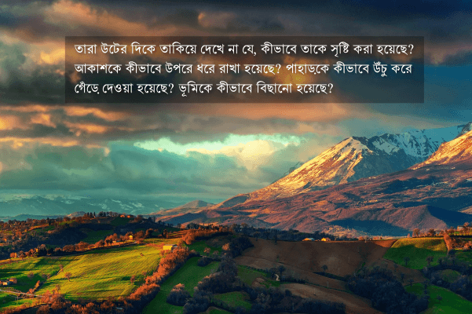
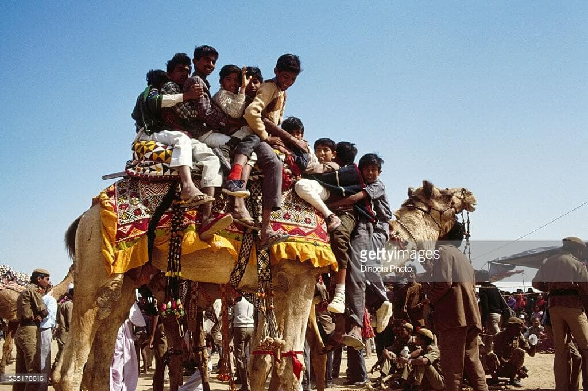
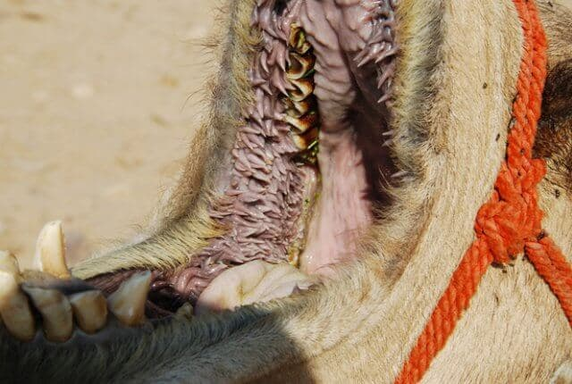
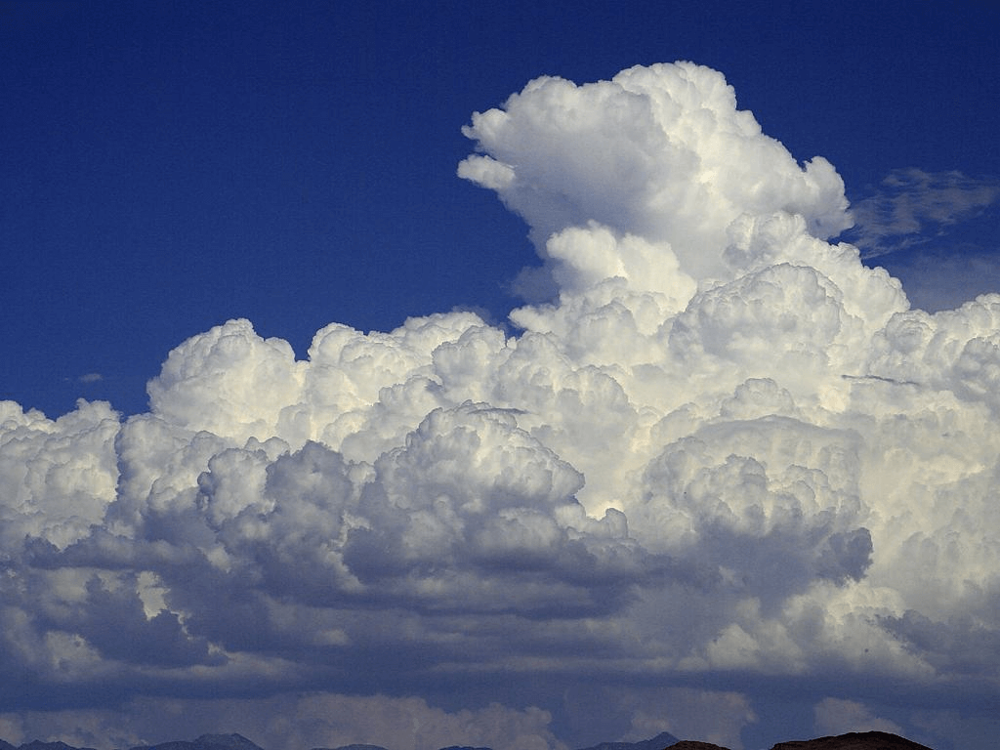
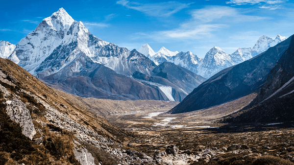
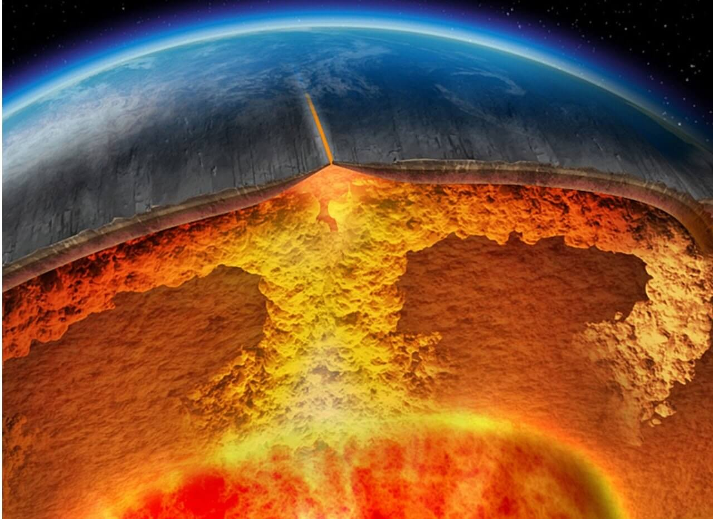
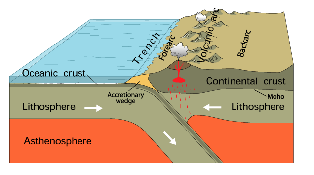

তারা উটের দিকে তাকিয়ে দেখে না যে, কীভাবে তাকে সৃষ্টি করা হয়েছে? আকাশকে কীভাবে উপরে ধরে রাখা হয়েছে? পাহাড়কে কীভাবে উঁচু করে গেঁড়ে দেওয়া হয়েছে? ভূমিকে কীভাবে বিছানো হয়েছে?
সুতরাং, তুমি উপদেশ দিতে থাকো। তুমি শুধুই একজন উপদেশদাতা। জোর করে মানানো তোমার কাজ নয়। তবে যে মুখ ফিরিয়ে নেবে এবং অস্বীকার করবে, আল্লাহ তাকে ভীষণ শাস্তি দেবেন। এরা শেষ পর্যন্ত আমার কাছেই ফিরে আসবে। আমিই তখন এদের কাছ থেকে সব হিসেব নেব।
— আল-গাশিয়াহ ১৭-২৬
সুরাহ গাশিয়াহ’য় আল্লাহ تعالى চারটি প্রশ্ন করেছেন। এই প্রশ্নগুলোর উত্তর আমি দিতে গেলে অবস্থা হতো এরকম—
“উটের দিকে তাকিয়ে দেখেছ, কীভাবে তাকে সৃষ্টি করা হয়েছে?”
— না, দেখিনি।
“আকাশকে কীভাবে উপরে ধরে রাখা হয়েছে?”
— জ্বি না।
“পাহাড়কে কীভাবে উঁচু করে গেঁড়ে দেওয়া হয়েছে?”
— না, দুঃখিত।
“ভূমিকে কীভাবে বিছানো হয়েছে?”
— না, কখনও ভাবিনি।
জীবনে বহুবার এই চারটি প্রশ্ন আল্লাহর تعالى কাছ থেকে শুনেছি। কিন্তু কখনও উত্তর খোঁজার চেষ্টা করিনি। কত সহজে চারটি কুর’আনের আয়াতের উপর আমল করতে পারতাম। কিন্তু করিনি। আজকে মুসলিম জাতির জ্ঞান-বিজ্ঞানে অন্য সব জাতির থেকে পিছিয়ে থাকার অন্যতম কারণ হচ্ছে আমার মত মুসলিমরা, যারা কুর’আনে পরিষ্কারভাবে সৃষ্টিজগত, বিজ্ঞান নিয়ে গবেষণা করার পরিষ্কার নির্দেশ থাকার পরেও শুধু নামাজ, রোজা, যাকাত করে জীবন পার করে দেয়। আর টাখনুর উপরে কাপড়, দাড়ির দৈর্ঘ্য, জোরে আমীন বলা নিয়ে নিয়ে তর্কে ব্যস্ত থাকে। আরও লজ্জার ব্যাপার হলো, এই সব প্রশ্নের উত্তর জানার জন্য আমাদের অমুসলিম বিজ্ঞানীদের গবেষণার ফলাফলের মুখাপেক্ষী হতে হয়। নিজেদের অর্জন বলতে গেলে কিছুই নেই। একুশটি তাফসির পড়েও শেখার মত উল্লেখযোগ্য কিছুই পেলাম না।
কুর’আনের চারটি আয়াতের উপর আমরা সহজেই আমল করে ফেলতে পারবো এই প্রশ্নগুলোর উত্তর খোঁজার চেষ্টা করে। এই প্রশ্নগুলোর মাধ্যমে আল্লাহ تعالى মানবজাতিকে প্রাণীবিজ্ঞান, মহাকাশবিজ্ঞান, ভূবিজ্ঞান এবং মৃত্তিকা বিজ্ঞানের প্রতি ইঙ্গিত করেছেন। নিঃসন্দেহে এই চারটি বিজ্ঞানে মানুষের জন্য বিরাট কল্যাণ রয়েছে। আসুন দেখি এগুলোর মধ্যে কী বিস্ময় লুকিয়ে আছে—

উটের দিকে তাকিয়ে দেখেছ কীভাবে তাকে সৃষ্টি করা হয়েছে?
উট প্রকৃতির এক বিস্ময়। এটি ৫৩ ডিগ্রি গরম এবং -১ ডিগ্রি শীতে টিকে থাকে। মরুভূমির উত্তপ্ত বালুর উপর ঘণ্টার পর ঘণ্টা পা ফেলে রাখে। কোনো পানি পান না করে মাসের পর মাস চলে। মরুভূমির বড় বড় কাঁটাসহ ক্যাকটাস খেয়ে ফেলে। দেড়শ কেজি ওজন পিঠে নিয়ে শত মাইল হেঁটে পার হয়। —উটের মত এত অসাধারণ ডিজাইনের প্রাণী প্রাণীবিজ্ঞানীদের কাছে অন্যতম বিস্ময়।[৪১৫][৪১৬]
মানুষসহ বেশিরভাগ স্তন্যপায়ী প্রাণীর দেহের তাপমাত্রা সাধারণত ৩৭ ডিগ্রি সেলসিয়াসের (৯৮ ডিগ্রি ফারেনহাইট) এর আশেপাশে থাকে। যদি দেহের অভ্যন্তরীণ তাপমাত্রা বেড়ে ৩৮.৫ ডিগ্রির (১০২ ফা) বেশি হয়ে যায়, তখন অভ্যন্তরীণ অঙ্গগুলোর ক্ষতি হতে থাকে। ৪০ ডিগ্রির (১০৪ ফা) বেশি হয়ে গেলে লিভার, কিডনি, মস্তিষ্ক, খাদ্যতন্ত্র ব্যাপক ক্ষতি হয়। ৪১ ডিগ্রি (১০৫ ফা) তাপমাত্রায় শরীরের কোষ মরে যেতে শুরু করে।[৪১৪]
একারণেই যখন স্তন্যপায়ী প্রাণীদের অভ্যন্তরীণ তাপমাত্রা স্বাভাবিকের থেকে বেড়ে যায়, তখন শরীর ঘেমে বাড়তি তাপ বের করে দিয়ে ঠাণ্ডা হয়ে যায়। কিন্তু উটের জন্য এভাবে পানি অপচয় করা বিলাসিতা। মরুভূমিতে সবচেয়ে দুর্লভ সম্পদ হচ্ছে পানি। একারণে উটের শরীরে এক বিশেষ ব্যবস্থা রয়েছে। ভোরবেলা এর শরীরের তাপমাত্রা ৩৪ ডিগ্রি থাকে। তারপর আবহাওয়া যখন প্রচণ্ড গরম হয়ে যায়, তখন অভ্যন্তরীণ তাপমাত্রা বেড়ে ৪১ ডিগ্রি (১০৪ ফা) পর্যন্ত ওঠে। এর পর থেকে এটি ঘামা শুরু করে। এর আগে পর্যন্ত এটি পানি ধরে রাখে। এভাবে প্রতিদিন উট স্বাভাবিক তাপমাত্রা থেকে প্রচণ্ড জ্বরের তাপমাত্রা পর্যন্ত সহ্য করে। এর শরীরের ভেতরে ব্যবস্থা রাখা আছে, যেন তা দিনের পর দিন ভীষণ জ্বর সহ্য করার পরেও অভ্যন্তরীণ অঙ্গগুলোর বড় ধরনের ক্ষতি না হয়।[৪১৫][৪১৬]
উটের রক্ত বিশেষভাবে তৈরি প্রচুর পরিমাণে পানি ধরে রাখার জন্য। উট যখন একবার পানি পান করা শুরু করে, তখন এটি প্রায় ১৩০ লিটার পানি, প্রায় তিনটি গাড়ির ফুয়েল ট্যাঙ্কের সমান পানি, ১০ মিনিটের মধ্যে পান করে ফেলতে পারে। এই বিপুল পরিমাণের পানি অন্য কোনো প্রাণী পান করলে রক্তে মাত্রাতিরিক্ত পানি গিয়ে অভিস্রবণ চাপের কারণে রক্তের কোষ ফুলে ফেঁপে ফেটে যেত। কিন্তু উটের রক্তের কোষে এক বিশেষ আবরণ আছে, যা অনেক বেশি চাপ সহ্য করতে পারে। এই বিশেষ রক্তের কারণেই উটের পক্ষে একবারে এত পানি পান করা সম্ভব হয়।[৪১৫][৪১৬]

উটের কুজ হচ্ছে চর্বির আধার। চর্বি উটকে শক্তি এবং পুষ্টি যোগায়। আর পানি শরীরের যাবতীয় আভ্যন্তরীণ কাজকর্ম সচল রাখে, শরীরের তাপমাত্রা ঠিক রাখে। একবার যথেষ্ট খাবার এবং পানি নেওয়ার পর একটি উট ছয় মাস পর্যন্ত কোনো খাবার বা পানি পান না করে টিকে থাকতে পারে।[৪১৫][৪১৬]
উট হচ্ছে মরুভূমির জাহাজ। এটি ১৭০-২৭০ কেজি পর্যন্ত ভর নিয়েও হাসিমুখে চলাফেরা করে। এই বিশাল, শক্তিশালী প্রাণীটির মানুষের প্রতি শান্ত, অনুগত হওয়ার কোনোই কারণ ছিল না। বরং এরকম স্বয়ংসম্পূর্ণ প্রাণীর হিংস্র হওয়ার কথা, যেন কেউ তাকে ঘাঁটানোর সাহস না করে। বিবর্তনবাদীদের বানানো বহু নিয়ম ভঙ্গ করে এই প্রাণীটি কোনো কারণে নিরীহ, শান্ত, মানুষের প্রতি অনুগত হয়ে গেছে। আল্লাহ تعالى যদি উটকে মানুষের জন্য উপযোগী করে না বানাতেন, তাহলে মরুভূমিতে মানুষের পক্ষে সভ্যতা গড়ে তোলা অসম্ভব হয়ে যেত।
উটের আরেকটি উল্লেখযোগ্য ক্ষমতা হলো কাটা যুক্ত গাছপালা চিবানোর ক্ষমতা, যা অন্য কোনো প্রাণীর নেই। বড় বড় কাঁটাসহ ক্যাকটাস এটি সাবাড় করে দিতে পারে। অন্য কোনো প্রাণী হলে ক্যাকটাসের কাঁটার আঘাতে মাড়ি, গাল, জিভ ক্ষতবিক্ষত হয়ে যেত। কিন্তু উটের কিছুই হয় না। উটের মুখের ভেতরে এক বিস্ময়কর ব্যবস্থা রয়েছে। এর মুখের ভেতরের দিকটাতে অজস্র ছোট ছোট শক্ত আঙ্গুলের মত ব্যবস্থা রয়েছে, যা কাটার আঘাত থেকে একে রক্ষা করে। এমন এক জিভ আছে যা কাঁটা ফুটো করতে পারে না।

উটের চোখে দুই স্তর পাপড়ি রয়েছে। যার কারণে মরুভূমিতে ধূলিঝড়ের মধ্যেও তা চোখ খোলা রাখতে পারে। এই বিশেষ পাপড়ির ব্যবস্থা সানগ্লাসের কাজ করে মরুভূমির প্রখর রোদের থেকে চোখকে রক্ষা করে এবং চোখের আদ্রতা ধরে রাখে। একইসাথে এটি বিশেষভাবে বাঁকা করা যেন তা ধুলোবালি আটকে দিতে পারে।[৪১৭]
আকাশকে কীভাবে উপরে ধরে রাখা হয়েছে?
কোটি কোটি টন পানি নিয়ে মেঘ কীভাবে আকাশে ভেসে থাকে? — আমরা কি ভেবে দেখেছি?
মেঘ তৈরি হয় সুক্ষ পানির কণা ঠাণ্ডায় জমে ঘন হয়ে একত্র হয়ে। যদিও মেঘ দেখে মন হয় যে সেগুলো কোনো ঘন পানির মিশ্রণ, কিন্তু আসলে মেঘের পানির কণাগুলোর মধ্যে অনেক দূরত্ব থাকে। মেঘের মধ্যে যতখানি পানি থাকে, তার থেকে হাজার গুন বেশি ফাঁকা জায়গা বাতাস ভরা থাকে। একারণে পানির কণাগুলো একসাথে জমে পানির ফোঁটা হয়ে পড়ে যায় না, যতক্ষণ বৃষ্টি না হয়।

মেঘের মধ্যে পানির কণাগুলো আসলে প্রতি মুহূর্তে নিচের দিকে পড়ে যাচ্ছে। কিন্তু একই সাথে বাতাসের উপরের দিকে প্রবাহের ধাক্কার কারণে কণাগুলো আবার উপরের দিকে ছিটকে যায়। আবার পড়া শুরু করে। আবার ধাক্কা খেয়ে উপরে উঠে যায়। এভাবে মেঘের ভেতরে পানির কণাগুলো প্রতি মুহূর্তেই পড়ছে, আবার উঠছে। যদিও দূর থেকে দেখে মনে হয় যে, মেঘ স্থির হয়ে ভেসে আছে। কিন্তু আসলে মেঘের ভিতরে কোটি কোটি পানির কণা প্রতি মুহূর্তে পড়ছে এবং বাতাসের ধাক্কায় আবার উপরে উঠছে।[৩০২]
মেঘ হচ্ছে সারা পৃথিবীতে পানি বিতরণ করার এক অসাধারণ ব্যবস্থা। মেঘের মাধ্যমে সমুদ্র থেকে কোটি কোটি টন পানি হাজার হাজার মাইল পাড়ি দিয়ে বন, জঙ্গল, মরুভুমি, শস্য ক্ষেতে পানি নিয়ে যায়। একইসাথে মেঘের কারণে পৃথিবীর তাপমাত্রা উষ্ণ থাকে। মেঘের স্তর পৃথিবী থেকে মহাকাশে তাপ হারিয়ে যাওয়া আটকে রাখে, পৃথিবীকে বসবাসের উপযোগী আরামদায়ক তাপমাত্রায় রাখে। আবার মেঘের স্তর সূর্যের প্রখর আলো থেকে রক্ষা করে, মাটি অতি উত্তপ্ত হয়ে যাওয়া প্রতিরোধ করে। মেঘ আছে দেখেই সারা পৃথিবী এখনো সূর্যের তাপে শুকিয়ে মরুভূমি হয়ে যায়নি।
পর্বতমালাকে কীভাবে উঁচু করে গেঁড়ে দেওয়া হয়েছে?
পর্বত এক বিশাল শক্তিশালী সৃষ্টি। পর্বতের বিশালত্বের সামনে দাঁড়িয়ে নিজেকে ক্ষুদ্র, তুচ্ছ মনে হয়। সৃষ্টিকর্তার প্রচন্ড ক্ষমতার সামনে মাথা নিচু হয়ে আসে। দুনিয়ার সব সমস্যা তুচ্ছ মনে হয়। আল্লাহ تعالى জিজ্ঞেস করছেন যে, আমরা কি বিশাল পর্বতগুলো কীভাবে গেঁড়ে দেওয়া হয়েছে, তা নিয়ে চিন্তা করেছি?

আমরা যখন উঁচু দালান বানাই, প্রথমে মাটির গভীরে ভিত্তি তৈরি করতে হয়। দালান যত উঁচু, ভারি হবে, তত বেশি গভীরে ভিত্তি তৈরি করতে হয়। বড় বড় শক্ত থাম পাইলিং করে মাটিতে ঢুকিয়ে ভিত্তি এবং তার আশেপাশের মাটি শক্ত করতে হয়। না হলে বিশাল ওজনের কারণে দালান আস্তে আস্তে মাটিতে দেবে যেতে থাকে।
পর্বতগুলো প্রকাণ্ড আকৃতির হয়। এই কল্পনাতীত ভর নিয়ে এগুলো যেহেতু দাঁড়িয়ে আছে, মাটির ভেতরে দেবে যাচ্ছে না, কোটি বছরে হাজারো ভূমিকম্পেও এগুলোর কিছুই হয় না, তার মানে নিশ্চয়ই অনেক গভীর পর্যন্ত এদের ভিত্তি রয়েছে? কীভাবে এত বিশাল পর্বতকে এত গভীর ভিত্তি দিয়ে গেঁড়ে দেওয়া হলো?
বহু বছর ধরে মাটি জমে তো এত শক্ত পর্বত হওয়ার কোনো সম্ভাবনা নেই। ভূমিকম্প হয়ে মাটির স্তর ভেঙ্গে উঠে গিয়ে এত উঁচু পর্যন্ত যাওয়াও সম্ভব না। মাটির ভেতর থেকে আগ্নেয়গিরির মাধ্যমে লাভা বেরিয়ে এসে একটা-দুটো পর্বত হয়, কিন্তু পর্বতমালা তৈরি হয় না। তাহলে পর্বতমালা তৈরি হয় কীভাবে?

বিংশ শতাব্দীর অন্যতম আবিষ্কার হচ্ছে প্লেট টেক্টনিক্স। পৃথিবীর উপরের স্তরটি একটি নিরবিচ্ছিন্ন শক্ত খোলস নয়। বরং এর খোলসটি পঞ্চাশটির বেশি ভাগে বিভক্ত। এই খোলসগুলো ক্রমাগত নড়ছে। কিন্তু এতই ধীরে নড়ে যে, আমরা বুঝতে পারি না। এখন এই খোলসগুলোর একটি যখন আরেকটির সাথে ধাক্কা লাগে, তখন একটি খোলস নীচে নেমে যায়, আর আরেকটি উপরে উঠে যায়। এভাবে একটি খোলস আরেকটির উপরে উঠে উঁচু হয়ে বিরাট পর্বতমালা সৃষ্টি করে।

পর্বতমালাগুলোকে আল্লাহ تعالى কীলকের সাথে তুলনা করেছেন। এর কারণ যেই প্লেটটি নীচে নেমে যায়, সেটি বহু গভীরে গিয়ে গেঁথে যায়। যার ফলে প্লেটটি শক্তভাবে আটকে যায়। একারণে ভূমিকম্প হওয়ার সম্ভাবনাও কমে যায়। পর্বতের আশেপাশের জায়গাগুলোতে একারণেই ভূমিকম্প কম হয়, কারণ সেখানে প্লেটগুলো শক্তভাবে একটার সাথে আরেকটা গেঁথে আছে।
ভূমিকে কীভাবে বিছানো হয়েছে?
পৃথিবীতে কেন এত সমতল ভূমি? পৃথিবী তো শুধুই এবড়ো-থেবড়ো, পাহাড়, পর্বত, খাঁদে ভরা হতে পারত। তা না হয়ে, এত বিশাল সব সমতলভূমি, মানুষের বসবাসের যোগ্য থাকার জায়গা তৈরি হলো কীভাবে?
পৃথিবীর ডিজাইন দেখলে পরিষ্কারভাবে বোঝা যায় যে, তা মানুষের বসবাসের উপযোগী করে বানানো হয়েছে। বিশাল সমতল ভূমি রাখা হয়েছে চাষবাস করে বিপুল জনসংখ্যার খাবারের ব্যবস্থা করার জন্য। বীজ বুনে একটু যত্ন নিলেই ফুল, ফল, ফসল জন্মে যায়। বাড়ি-ঘর তৈরি করার জন্য যাবতীয় ব্যবস্থা আগে থেকেই রেখে দেওয়া হয়েছে। বিশাল বন ভর্তি গাছপালা, মানুষের জন্য প্রয়োজনীয় কাঁচামাল রাখা আছে। যথেষ্ট সমতল জায়গা দেওয়া হয়েছে কোটি মানুষের বসবাসের জন্য। মানুষ তো এগুলো তৈরি করেনি। কীভাবে এসব হলো?
পৃথিবী প্রথমে মোটেও মানুষের বসবাসের উপযোগী ছিল না। কোটি কোটি বছর ধরে নদীর পানির প্রবাহ থেকে ক্ষয়, পলি জমা, ক্রমাগত বৃষ্টির ফলে ক্ষয়, ভীষণ বন্যা, ঝড়, ভূমিকম্প, বাতাসের মাধ্যমে ক্ষয়, লাভার প্রবাহ ইত্যাদি নানা প্রাকৃতিক প্রক্রিয়ায় পৃথিবীর উপরের রুক্ষ স্তর ক্রমাগত ক্ষয় হয়ে, তলানি জমে একসময় সমতল, উর্বর ভূমি তৈরি হয়েছে।[৪১৮]
সুতরাং, তুমি উপদেশ দিতে থাকো
সুতরাং, তুমি উপদেশ দিতে থাকো। তুমি শুধুই একজন উপদেশদাতা। জোর করে মানানো তোমার কাজ নয়। তবে যে মুখ ফিরিয়ে নেবে এবং অস্বীকার করবে, আল্লাহ তাকে ভীষণ শাস্তি দেবেন। এরা শেষ পর্যন্ত আমার কাছেই ফিরে আসবে। আমিই তখন এদের কাছ থেকে সব হিসেব নেব।
আমাদের কাজ উপদেশ দেওয়া, মানুষের কাছে ইসলামের সৌন্দর্য, যৌক্তিকতা তুলে ধরা। “তিন দিন সময় দিলাম। যদি এই সব বন্ধ করে সাচ্চা মুসলিম না হও, তাইলে কিন্তু…” —এরকম জোর-জবরদস্তি করা আমাদের কাজ নয়। ইসলামের আদেশ, উপদেশ, নির্দেশ শুনে উপলব্ধি করার পরেও কেউ যদি সিদ্ধান্ত নেয় যে, সে মানবে না, তাহলে আমাদের আর কিছু করার নেই। আল্লাহই تعالى তার বিচার নেবেন। তাঁর تعالى কাছেই শেষ পর্যন্ত ফিরে যেতে হবে। তাঁর সামনে দাঁড়িয়ে কীভাবে অবাধ্যতার কৈফিয়ত দেবে, ফুর্তি-দুর্নীতিতে মজে থাকা জীবনযাত্রার পক্ষে সাফাই গাইবে, সেটা যেন এখনই ভেবে দেখে। মৃত্যু আসার আগ পর্যন্ত সময় আছে ফিরে আসার। মৃত্যুর আগের মুহূর্তের তাওবাহ আল্লাহ تعالى গ্রহণ করেন না।
সূত্র
[৩০২] Pmm.nasa.gov,. (2015). The Anatomy of a Raindrop | Precipitation Education. Retrieved 24 June 2015, from http://pmm.nasa.gov/education/videos/anatomy-raindrop
[৪১৪] The effects on the body of a fever | Atlas of Science. (2018). Atlasofscience.org. Retrieved 30 June 2018, from https://atlasofscience.org/the-effects-on-the-body-of-a-fever/
[৪১৫] Eggleton, M. (2015). Cleverly designed camel – creation.com. Creation.com. Retrieved 30 June 2018, from https://creation.com/cleverly-designed-camel
[৪১৬] Science, L. (2017). Camels: Facts, Types & Pictures. Live Science. Retrieved 30 June 2018, from https://www.livescience.com/27503-camels.html
[৪১৭] Megan Gannon, L., & Megan Gannon, L. (2018). Your Eyelashes Should Be This Long, Science Says. Scientific American. Retrieved 30 June 2018, from https://www.scientificamerican.com/article/your-eyelashes-should-be-this-long-science-says/
[৪১৮] Society, N. (2011). plain. National Geographic Society. Retrieved 1 July 2018, from https://www.nationalgeographic.org/encyclopedia/plain/